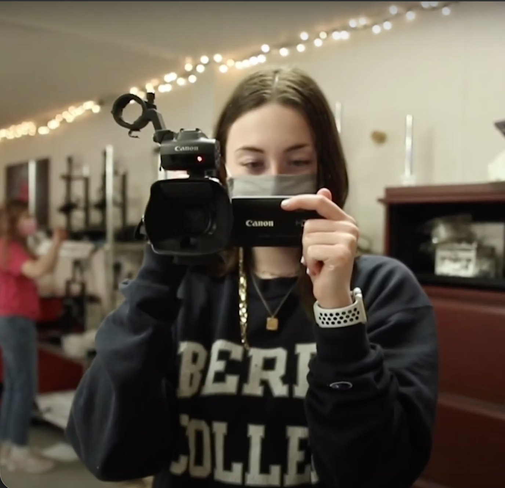
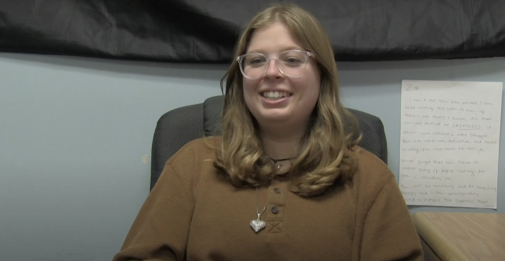
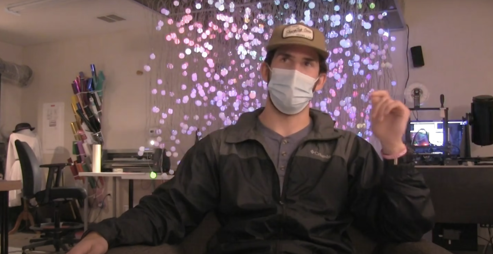

Watch the Documentary

— Video & Audio / Documentary Short Film
I made this 10-minute documentary for my senior exit exam hackathon project. For this exam, we have four hours to put together something related to what field we want to go into after graduation. This video explores how some of the Creative Technologies majors entered into the program and grew through the years.
— How It Was Made
Because the assignment was to complete the project within 4 hours, I was not able to do as much prep work as I would have liked. However, I did connect with the other Creative Technologies seniors in my class and schedule four interviews. I also decided what kind of video/audio equipment I would need.
I filmed interviews with a DSLR camera, boom mic, and tripod. I also went around the lab and filmed som b-roll.
I edited together the interviews and b-roll in Adobe Premiere Pro and After Effects. I also added in some music to make it more engaging.
— Outcomes
The short film was well received once the showcase began. The professor shows the short documentary to students who are interested in the Creative Technologies program so that they can get an insider student's perspective.
— Behind the Scenes


